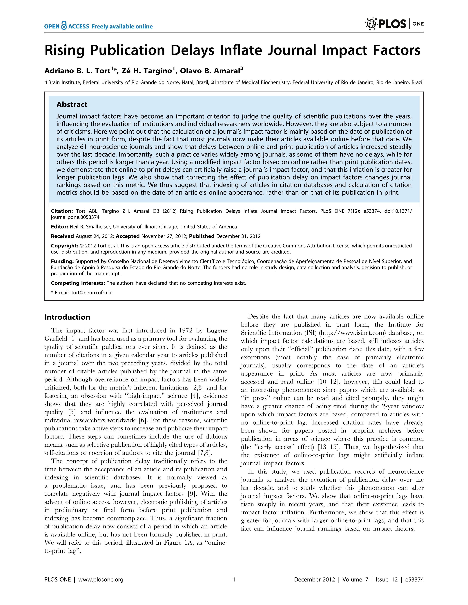
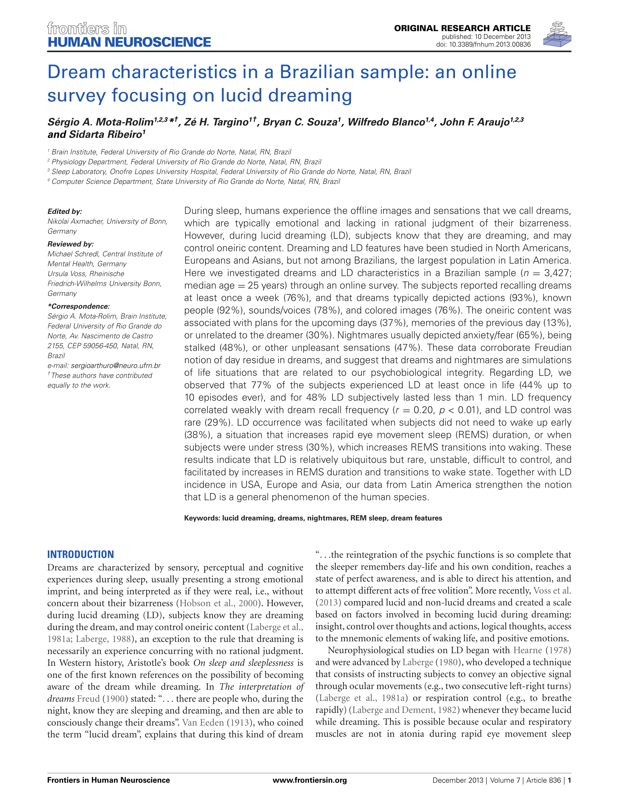
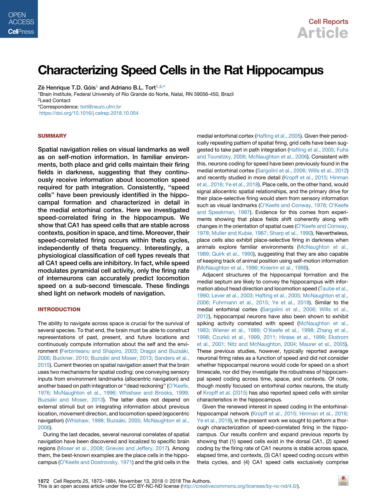

Publications
-
Rising Publication Delays Inflate Journal Impact Factors

This article demonstrates that the impact factor of hybrid journals (those with both online and print editions) is artificially inflated due to the way the metric is calculated. Specifically, the physical publication date is used, while the increasingly earlier online publication date is ignored. As a result, articles have a longer window to accumulate citations, which distorts the measure of their influence.
My work focuses on data collection and analysis. I manually gather publication and citation data from Elsevier’s Web of Knowledge and process it using MATLAB to investigate this effect.
-
Dream characteristics in a Brazilian sample: an online survey focusing on lucid dreaming

This article presents survey data on lucid dreaming collected from a Brazilian sample. We gathered responses from 1,000 participants using a web-based questionnaire and conducted summary statistics and descriptive analyses of the results.
I contributed during the second stage of data collection and analysis. Specifically, I compiled the survey’s CSV files and processed them using MATLAB to explore patterns in the data.
-
Interconnection and synchronization of neuronal populations in the mouse medial septum/diagonal band of Broca

We analyzed the interconnection and synchronization of neuronal populations in the mouse medial septum/diagonal band of Broca (MS/DBB). Distinct stimulation methods were employed while recording intracellular neuronal activity using the patch-clamp technique.
My contribution involved preparing and recording brain slices under a microscope, using micromanipulators to position a glass pipette adjacent to the membrane of MS/DBB neurons. During these recordings, I applied nicotine stimulation and observed no detectable effects, leading to the conclusion that nicotinic receptors were absent in these neurons.
-
Characterizing Speed Cells in the Rat Hippocampus

I used an open dataset in behavioral neuroscience to demonstrate that the locomotion speed of rats positively correlates with the activity of a small subset of hippocampal neurons. These neurons were recorded using extracellular electrodes. Based on the observed firing patterns, I argued that these neurons are inhibitory in nature.

{kind=link}
{kind=link}
{kind=link}